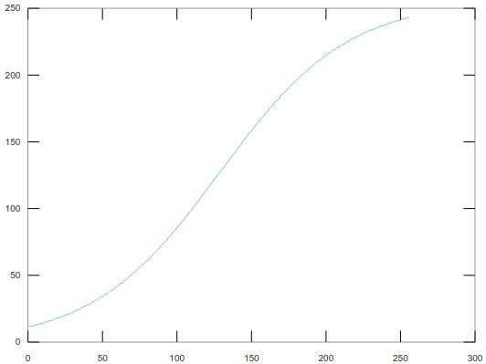

Project Description
Introduction
The goal of this project is to create a hardware accelerator for a multilayer perceptron neural network. A multilayer perceptron (MLP) is a class of feedforward artificial neural networks. An MLP consists of, at least, three layers of nodes: an input layer, a hidden layer, and an output layer. Except for the input nodes, each node is a neuron that usually uses a nonlinear activation function. Backpropagation is a popular supervised learning technique for training MLPs . MLP can also be trained using other techniques such as Genetic Algorithms, Particle Swarm Optimization, etc.
We will be implementing the hardware accelerator for inference (prediction), not for training. Training the neural network (which involves optimizing the weights of the connections in the network to minimize prediction error) can be done separately on a PC / Laptop and the weights can be stored in a file. For the sample data given on this page, the training is already done and the weights are provided. Implementing the architecture mentioned below and using these weights is good enough to meet the basic requirements. Even if you are using a different neural network architecture or dataset, the training can still be done offline.
For the rest of this manual, we will use the OpenCL terminology: * Host: The software running on ARM Cortex A53 (PS). * Device: The accelerator / co-processor implementing the neural network in hardware, interfaced using DMA (recommended) or FIFO (fallback option) or AXI/AXI-Lite natively. This should be able to receive the weights and the data from the host, and return the predicted labels.
We will need to implement prediction (predicting the label of a new input data) in 3 different ways
- SOFT: A pure software implementation running on the Host.
- HARD_HDL: A system with a Device written in HDL.
- HARD_HLS: An AXI / AXI Lite / AXIS Device, which is at least partly created using the HLS tool.
The Host can be standalone (lower overhead) or Pynq (higher overhead, but has the advantage of being able to use a full OS and Python for the Host code).
Procedure
All the required files are here.
It is fine to hardcode the data in your Host. The Host should get the prediction done through SOFT or HARD_HDL or HARD_HLS, and display the results in some form - the raw result data need not be displayed. You can, for example, display the classification accuracy in case labels are known in advance, like how it is for the provided sample data. You could also display just the prediction, in case your system is able to take in real-time inputs, the labels of which aren't known in advance.
The weights should not be hard-coded in your coprocessor design, i.e., the coprocessor should be able to deal with different weights. This allows the same coprocessor (hardware) to deal with possibly different datasets and weights, provided the neural network architecture and data dimensionality do not change. At least, the data dimensionality should not exceed what you had designed for, i.e., 7 for the design mentioned below on this page. A lower-dimensional data can be easily dealt with by setting the weights corresponding to unused features to 0. A dataset that has more samples / data points can be dealt with by having an appropriate host program that can break it into chunks which the coprocessor can accept, which is 64 in our case.
You can have 3 separate host programs and 2 different devices for demonstrating the functionality of the 3 predictors. However, it will be more elegant (though not mandatory) to use a single hardware platform, and a host program written such that the selection between SOFT, HARD_HDL, or HARD_HLS to do the prediction can be done easily. For example, this can be by sending some sort of message from the serial console or ssh.
It is required to have some form of a performance measurement mechanism to compare the time taken by the three predictors. This can be from AXI Timer if using standalone, or an OS provided timer if using Pynq.
You can make your own choices regarding the neural network architecture such as the number of hidden layers, the number of neurons in each hidden layer, etc, subject to some minimum requirements:
- There should be at least one hidden layer.
- There should be at least 2 neurons in the hidden layer(s) using a non-linear activation function that is not piecewise linear (e.g., not ReLU or variants).
- There are no restrictions regarding the activation functions used elsewhere, i.e., the third neuron onwards in the hidden layer, or additional hidden layers.
The sample data section below has data and pre-trained weights for the neural network architecture described in that section, which is enough to meet the basic requirements. You are free to explore other architecture and / or other data. The focus though, is on exploring hardware architectures rather than exploring different neural network architectures - the module is on hardware design and machine learning just happens to be the application we chose to accelerate (which we thought would give many who are new to machine learning some flavor of it).
Having said that, exploring some hardware related aspects (such as dealing with overflows, negatives, precision issues, etc) wouldn't be possible with the pre-trained network above - you will have to do your own training for that.
It is not just about getting things functionally/algorithmically correct. It is about having a systematic design and being able to appreciate the various tradeoffs. There is no fixed requirement regarding accuracy, resource usage, or performance - all these are interdependent. Your design should be Pareto-optimal, i.e., it should be such that one figure of merit cannot be improved without compromising on another.
Sample data
You can any dataset you like. A synthetic dataset (a distorted version of the original wine dataset) as well as the weights for the neural network are given below.
The input layer has 7 nodes, corresponding to 7 features. The matrix contained in X.csv is a 64 x 7 matrix, corresponding to 64 data points, each with 7 features.
There is 1 hidden layer having 2 neurons, with the neurons having 1 (decimal) as bias input (you can consider this as 255 or 256 as you wish in the 0.8 unsigned fixed-point format we use). In other words, we do \(\frac{\sum_{0}^{7} \left ( w_{i}\times x_{i} \right )}{256}\) where \(w_{0}\) is the bias and \(x_{0}\) is considered 255 or 256. Why is 256 ok when it doesn't fit into 8 bits? Because 256 (representing 1.0), can be implicitly used by doing << 8 (which can be done by appropriate bit wiring) instead of multiplication. Alternatively, you can simply do \(w_{0} + \frac{\sum_{1}^{7} \left ( w_{i}\times x_{i} \right )}{256}\). Please keep in mind the representation format, and things will be clearer.
The neurons in the hidden layer have a sigmoid activation function, as given below. The exact formula used is \(y = 256\cdot\frac{1}{1+e^-\left({\frac{6x}{256}-3}\right)}\), where \(x\) is an integer in the interval [0, 255], i.e., in the 0.8 format. This uses only the middle part of the curve, so the amount of non-linearity isn't very high.

The sigmoid function can be computed using a lookup table given in sigmoid.csv]. The input to the function is used as an index to look up the output of the function. It is also fine to compute it directly using the formula if you wish. Which would be better for 8-bit scenario? Using a table or computing it directly? How about for 32-bit numbers?
The file w_hid.csv contains the weights for the hidden layer. This is an 8 x 2 matrix, with the first row containing the weight for the bias term, and the rest of the 7 rows containing weights for each of the features. The two columns represent the weights corresponding to the two neurons in the hidden layer.
The output layer has a bias input too, and a linear activation function i.e., the output is simply the weighted sum of inputs to the neurons (and bias). The 3 x 1 weight matrix given in w_out.csv, where the first element is the weight of the bias term, and the rest of the two are weights for the outputs from the hidden later.
The labels for verification can be found in labels.csv.
Note: In unsigned 0.8 fixed-point format, there is an implicit scale factor of 256. So whenever you have a multiplication of two 0.8 format numbers, you need to scale down by 256. Whenever you have a division, you should scale up by 256. Addition and subtraction don't change the scale. When you are doing multiply and accumulate, you can do the scaling down by 256 after accumulation, which will preserve precision better than scaling down after every single multiplication.
Links
https://playground.tensorflow.org - very nice interactive visualization of neural networks.
https://web.archive.org/web/20150317210621/https://www4.rgu.ac.uk/files/chapter3%20-%20bp.pdf (see page 20 for a numerical example)
Tips / Food For Thought
The above sample data was curated such that you won't have an intermediate result that cannot be represented in 0.8 unsigned fixed-point format at any stage in computation. In a real-world dataset, this can't be guaranteed. Some possible approaches to mitigate this issue are
- Scaling down the input even further - this would mean even more quantization errors / limitations on the input range.
- Using more bits for intermediate results.
- Having some sort of saturation logic (instead of 249+7 = 0, it is better to do 249+7=255).
- Having a signed representation system instead of unsigned - this will allow negatives, though it will reduce the range on the positive side.
When you convert one intermediate representation / result to another, you might want to consider other rounding modes too. Right now, you just truncate, by simply dropping the least significant bits. This happens when you divide by 256 - you are essentially converting a 16-bit representation with a scale of 256*256 to an 8-bit representation with a scale of 256 - you do so by dropping 8 LSBs. What if the 16-bit value is, say, 1000 0001 1111 1110? Wouldn't it be more accurate if it is converted to 1000 0010 instead of 1000 0001?
Another possible way to represent numbers is using floating-point representation. Unlike a fixed-point system where the position of the point is fixed and implicit (and adjusted whenever an operation such as multiplication or division changes it), in floating-point, the position of the point is encoded separately using dedicated bits for the purpose. You can read more about it here.
You can google for terms such as pruning, quantization, encoding, approximate computing, etc. in the context of neural networks if you are interested.
The exact way you do the computations and the precision to use is entirely up to you.
- It is a good idea (but not a requirement) to mimic the representation system you are planning to implement in hardware in a C implementation first. Later on, try it out in HLS as well, where you can mimic the hardware more closely through ap_uint<> datatype, which allows for arbitrary precision (not just 32-bit as vanilla C).
- This way, there will be a closer correspondence between C and HDL implementations - which means you will have a better idea of what exactly you are implementing, and the results you should get in each step, and hence you will have an easier time debugging.
- You can do arbitrary precision in Python too with appropriate libraries, just that Python code isn't usable directly for HLS.
- Also, if you are doing your own training, you can fine-tune the number of hidden layer neurons, etc. using your C implementation before setting the corresponding parameters in HDL.